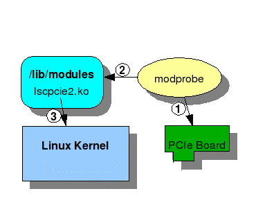
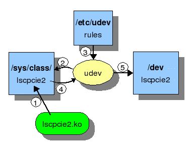

Driver Source Code
The lscpcie2 driver is a Linux 2.6.x based PCI style device driver.
The driver uses the Linux device model introduced in the 2.6 kernel to register the driver and
devices in the /sys/class tree and have them known to the system and user.
The driver source is based on the simple form of all functions in one file, since it
is a relatively small driver.
- lscpcie2.c - contains all the driver source code
- Ioctl.h - contains the definitions of all the supported interfaces/access points between
the driver and user space code. All shared structures, constants and IOCTL commands are defined here.
- sysDefs.h - contains data type definitions to port so types used in the driver code to Linux
- 9-lscpcie2.rules - the udev rules for creating device nodes in the /dev tree
- insdrvr - script file to manually install the driver; used mainly for development and testing
- rmdrvr - script file to manually remove the driver; used mainly for development and testing
All global functions are prefixed with lscpcie2_ to indicate they belong to this driver.
Loading the Driver
The driver is loaded into the Linux kernel by a system call.
There are two ways to load a driver. The choice depends on
usage: development or automated.
- insdrvr - use the script file to insert the driver manually for development purposes.
This script uses the insmod system call to load the driver module into the kernel.
- init script - the DevKit install script will add to the init file /etc/rc.d/rc.local
a line to execute the modprobe call for the respective drivers, which then uses the kernel's
automated services to load registered modules based on hardware discovered.
For standard operations, the driver is installed and loaded automatically by the system when the OS starts.
This is done using the modprobe call and associated configuration files.
Installation
- The driver file lscpcie2.ko is copied into the system's
/lib/modules/.../extra/ location for extra modules added to the kernel
- The command depmod is run that gerenates a list of rules that associate
the driver with PCI hardware ID's that the board supports.
- modprobe is added to the system's local startup script so that once the
system boots it will probe for Lattice PCIe eval boards and will load the driver if
they are found.
Inserting
The following figure illustrates this process.

- modprobe is called to look for Lattice PCIe eval boards
- modprobe uses the modules.deps and modules.alias files to associate
the correct driver with the discovered hardware
- modprobe installs the lscpcie2.ko file into the kernel
Initializing
Once the driver is loaded, the kernel calls the lscpcie2_init() entry point.
The driver registers the lscpcie2_probe() function to be called when-ever
the PCI sub-system detects a board corresponding to the Lattice Device, Vendor and
sub-system IDs.
The kernel then invokes the callback for each eval board it discovers. The job of
the lscpcie2_probe() function is to initialize the board hardware and setup
the structures to make it appear in the /dev devices tree.
The following figure illustrates this process.

- The driver adds an lscpcie2 into the /sys/class/ tree.
Making entries in the /sys/class directory structure allows the driver to announce
it has found a device and provide identifying details to the system. The system
services then know that this device belongs to the driver, so any accesses to this
class of device should be referred to the driver. This is done in the lscpcie2_probe()
function with class_device_create() and friends.
- Creating entries in the /sys tree causes the udev service (daemon) to examine
what has changed and look for rules on how to deal with the new device.
- Once an entry has been created in the /sys/class tree, the system udev service is
notified, and it examines the tree for new entries. It tries to match entries with
rules contained in files in /etc/udev/rules.d directory.
- The file 9-lscpcie2.rules provides the pattern matching rules for identifying a
Lattice lscpcie2 type device.
- The rules specify how to create an entry in the /dev/lscpcie2/ directory.
This is done automatically by the system without any user or driver initiation.
Older style drivers manually created device nodes in /dev using the mknod command.
udev gives Linux the Plug-N-Play look and feel.
After the driver is loaded and hardware devices are discovered, the board hardware has
been initialized. The driver writes to the hardware and displays an "I" on the 16 segment LEDs.
The udev service creates nodes in the /dev/lscpcie2 tree corresponding to each board found.
The hardware and driver are now ready to be "opened" and used.
Note that the udev service (and installed rules) is required for either the manual load
(with insmod) or the standard automatic load. udev is the way the device nodes appear
in /dev/lscpcie2.
How a Device is Opened
To use the board, a User application needs to open a file handle to it. This is done the standard
Unix way by opening the filename in /dev that corresponds to the device/driver pair.
The device file name appears in the directory /dev/lscpcie2. It has been automatically created
by udev and the specific lscpcie2 rules file. The device file will have a major number that
matches the lscpcie2 driver. Each device entry will have a unique minor number that matches
the driver's index of boards it supports.
Upon successfully opening the lscpcie2 device file, the caller now can use the driver's read, write
and ioctl calls to access driver resources and hardware memory. The Linux file system will
now direct any system calls operating on that file to the driver's entry points.
How Device Memory is Accessed
The eval board's registers are made available to the user space application via the
mmap() system call. The driver implements mmap() which maps the board's BAR1 address
space into the caller's virtual memory. A translation is setup in the user's pages
such that memory addresses (via a pointer) map directly to the hardware on the
eval board.
mmap() returns a pointer to the memory window, like malloc'ing it, but accesses
to this memory range will become direct PCIe MRd/MWr transactions.
DMA Common Buffer
The driver allocates up to 64KB of memory for use by the eval board when performing
the Thruput demo. The Thruput demo needs a valid place to read/write PCIe data
from/to that will not corrupt system operation. The driver kmalloc's a block of
memory and the physical bus address of this memory is available through ioctl()
calls. The address can then be programmed into the IP when performing the transfers.
The contents of this "DMA" memory buffer can be accessed by the user using the
read() and write() file operations. This way the buffer contents can be cleared with
a write() before the IP is programmed to transfer into it (MWr thruput test), and then
later examined with a read() to verify the IP really did move data into PC system memory.
Closing the Device
Closing access to an lscpcie2 device (PCIe eval board) is done with a standard close() call.
The driver's lscpcie2_release() call does very little, since this is a very light-weight
driver. It displays a "C" on the 16 segment LEDs to indicate the board is closed and no one
is using it now.
There are no resources to release so nothing else is done. The standard file system will
prevent further access via this file handle since the file has been closed.
Removing the Driver
Normally the driver is not removed, since the boards are not hot-swapable, but manually
using the rmdrvr script will cause the driver to be removed. This will release all resource
acquired by the driver (mainly mapping the GPIO registers into driver memory for displaying
characters on the 16 segment display.) The driver is also unregistered from the PCI subsystem
and the entries in /sys/class are removed, which causes the device nodes in /dev/lscpcie2 to
disappear.
Debug Output
The driver contains debug macros that send output to the system log (if the driver was installed with the
option debug=1).
The system log can be viewed with tail -f /var/log/messages (need to be root).
Information about opening the driver, executing a commands, etc. will all be
sent to the system log, as well as messages from the demo application and library.